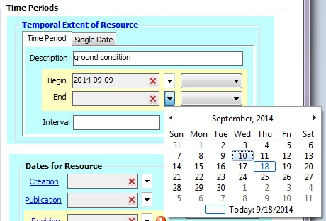
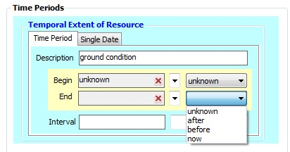

Conditional, Repeatable element
This element relates to the relevant date of the data content. Users may choose to enter a single date or a range of dates depending on the time period of the data resource. Use the single date option for documenting the time period information when the resource reflects a single date. Use a range of dates for documenting the time period when the information in your resource reflects a range of dates. Use indeterminate dates to document unknown dates and present dates.
For Time Period (or Range of Dates):Enter a description outlining the currentness of the data resource, e.g. ground condition
For Known Dates, click on the drop-down arrow to select the dates.

For Indeterminate Dates, click on the drop-down box next to the date field and choose one of the following: unknown, now, before, or after. Note: Either a known date or indeterminate value may be selected, not both for any given record.

If known, enter an Interval (the frequency between time events) of the data resource.
For Single Date:
Select the Single Date tab and enter a single date using the calendar feature or choose an indeterminate date value from the drop down list. Note: Either a known date or indeterminate value may be selected, not both for any given record.
Indeterminate Time Periods:
- unknown
- now
- before
- after
Interval
- hours
- days
- weeks
- months
- year
Element type: compound (single date, range of dates, or indeterminate time periods, and optional time interval)
Data.gov
ISO 19115
FGDC CSDGM